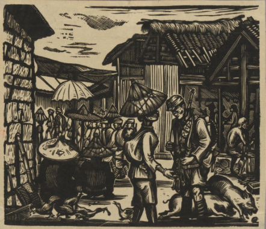
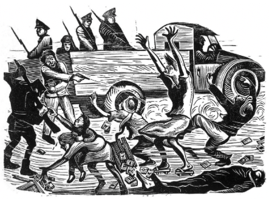
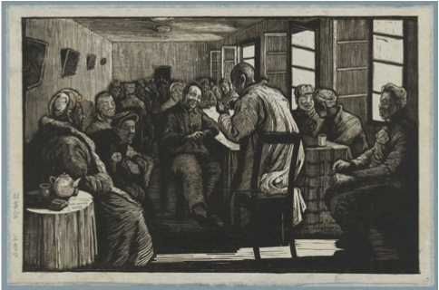
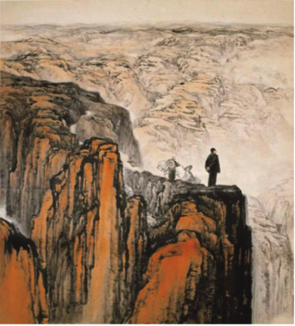
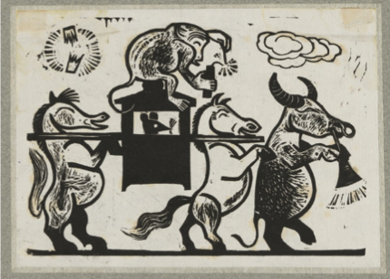
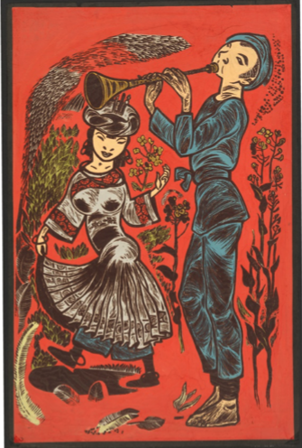
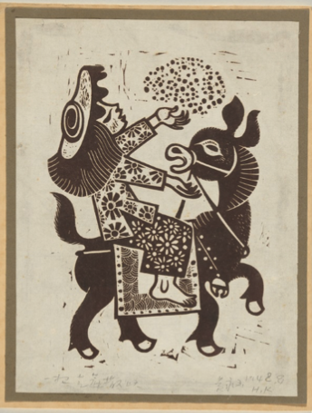
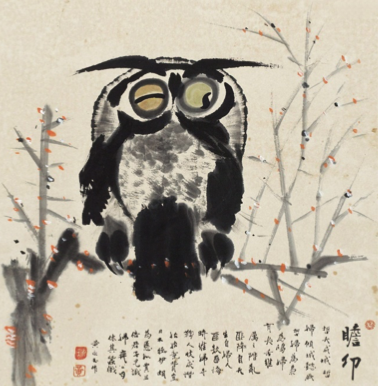

The following is my speech in the workshop “Art in the Eyes of the Artists: Peter Townsend's Chinese Woodcut Collection, National Gallery of Australia”. The international workshop was held at the National Gallery of Australia in Canberra from September 29 to 30, 2022. It was initiated by Claire Roberts, associate professor of art history and curatorial studies at the University of Melbourne and sponsored by the National Foundation for Australia-China Relations. Chinese participants in the video workshop include Xu Bing, Lu Yinghua, Liu Qingyuan, Liu Ding, Cai Tao and Li Kang. Participants from Australia are Pamela See, Shen Jiawei and Wang Zhiyuan.
First of all, I would like to express my admiration for Mr. Townsend's collection. It is the first time that I know some of the artists and works in these 278 works, although I had a background of learning printmaking, I feel ashamed. It is very precious that so many works can be preserved together.
In the early 80s, when I was studying in the Printmaking Department of the Central Academy of Fine Arts, I met Mr. Gu Yuan, Li Hua, Li Qun, Yan Han and others. I was also familiar with many of these works, and they have been introduced a lot before. Therefore, I do not want to analyze these works in terms of art, but I want to think from another angle, from the historical environment in which these works were produced, especially the impact on the future of artists. In the interest of time, I selected three artists to talk about, Huang Rongcan, Shi Lu and Huang Yongyu.
In the 1930s, Lu Xun first introduced print works mainly from Germany and the Soviet Union in Shanghai, and guided a large number of young artists to embark on the road of "Left-wing Printmaking" through books and exhibitions. These activities in Shanghai slowly affected other regions. Many artists took their works to Yan'an. In 1938, after the establishment of the "LuXun Academy of Fine Arts" in Yan'an, it ushered in the heyday of woodcut development. Therefore, Yan'an woodcut was developed on the basis of inheriting Shanghai's "Left-wing Printmaking". Woodcut, as an art form, was particularly suitable for the turbulent environment in China at the beginning of the 20th century. The materials were simple and easy to make, and it was especially suitable for the extreme lack of materials in Yan'an at that time. China's printmaking has ushered in such a development opportunity, we should first of all thank Mr. Lu Xun for his great support for the introduction and exhibition of Western printmaking in the 1920s. He did not recommend Impressionism, Expressionism or other art schools in the west, because he was very clear that there was no "art problem" in China at that time, and the first problem was "living", the most basic "enlightenment" was needed. From the perspective of the Chinese art history, the life of "people" is rarely described in paintings, especially the life of ordinary people. Most of the traditional Chinese paintings are flowers, birds, fish, insects, or mountains or waters. They are provided to officials and scholars. "Art comes from life", which should be a very avant-garde art declaration in China at that time. China's long-term feudal system has restricted the power consciousness of all the people. It is only just over that women have said goodbye to binding their feet (my mother was born in 1917, and she is the last generation in general to have foot binding) and men have also cut off their braids. Everyone was excited to be liberated from bondage. Therefore, these print works appeared in an age full of fantasy. We cannot simply say that these works came from the purpose of "publicity", because many artists did not fully realize the concept of "publicity" in their consciousness back then. It is to protect the country and establish an ideal society of equality and freedom (the editorial "Ode to Democracy – Dedicated to Independence Day of the United States" published by Xinhua Daily, affiliated to the CPC Central Committee, on July 4, 1943, praised and expected to establish a democratic system like that of the United States). The vision was beautiful, but the reality was not the case.
The first artist I will mention is Mr. Huang Rongcan (1920-1952) (Image 1). It was only through the collection that I first learned about this artist. I hope to know more about him, but I can't find any Chinese information about this artist from Google. Fortunately, I found some English information through Pinyin to know who he is and his fate. He was only 32 years old when he was shot in Taipei, in 1952. The reason was that he used printmaking as a tool to publicize the "red thought". In general, he passed the entrance examination of the Kuomintang in 1945 and went to Taiwan to teach. He was 25 years old then. He brought the "Left-wing" printmaking idea to Taiwan and organized various exhibitions. He made The Horrifying Inspection (Image 2) to reflect the “February 28 Tragedy”. In 1947, the artist also brought this work to Shanghai for exhibition and spread it to Japan. On December 1, 1951, Huang Rongcan was arrested in the staff dormitory of Taipei Normal University and was accused of propaganda, treason and espionage for the Communist Party of China and therefore lost his life.

Image 1 Farewell, 1937-44

Image 2 The Horrifying Inspection, 1947
The second artist is Shi Lu, born in 1919 and deceased in 1982. In this collection, he is the only artist whose print works have Mao Zedong in them (Image 3). Later, in 1959, he created the famous Chinese painting "Moving to Northern Shaanxi" (Image 4), which also praised Mao Zedong. After the "Cultural Revolution" in 1976, I was still a high school student. When I saw the works through printed materials, I liked them very much. I admired that the artist painted beloved Chairman Mao very magnificent, and he had extraordinary painting skills. However, it was a pity that the artist was brutally persecuted during the "Cultural Revolution" in 1966-76, because of this painting. After seeing this work in the exhibition, a general commented: “isn't this a mockery of Mao Zedong's decision to rein in at the precipice? Perhaps it would be more appropriate to draw Chiang Kai Shek.” The "Cultural Revolution rebels" once arrested him as a "special agent of Soviet Revisionism" and tortured him. He escaped from the "cowshed" for several times and was not shot because of his schizophrenia after being captured. In order to survive, he fled from Xi'an and lived like a savage in the wild mountains all day. When the situation improved, he returned to Xi'an and was half disabled.

Image 3 Congregation of Heroes, 1938-49

Image 4 Moving to Northern Shaanxi, 1959
Through the experiences of the above two artists, we can feel the impact of the environment on the artists, especially under the special historical background of China. As artists, how did they express their feelings through their works? How did they change by transforming themselves and following closely the changes of the external environment? They have been thrown into the torrent of "saving the country and the people". However, after 1949, artists encountered a "new era", and they either gave up or turned to the road of "art serving politics".
The third artist is an exception. It is Mr. Huang Yongyu. He is the only living artist in this collection and He will be 100 years old next year.
In Mr. Townsend's collection, only five of his works do not have "Great history" nor "combat" (Images 5, 6 and 7). These "relaxed style" which is out of step with the "Great era" is kept in his works throughout his life. Here I have to mention a famous writer Mr. Shen Congwen. Because he and Shen Congwen are uncle and nephew, they both came from the Phoenix Town in Hunan Province. Therefore, they have been friends and teachers all their lives. Huang Yongyu was only 26 when he returned to Beijing from Hong Kong in 1952 to meet Shen Congwen. Shen Congwen has just experienced the political whirlpool. After the founding of new China in 1949, his writing was basically forced to stop, He needed "ideological transformation", so he once had two attempts to commit suicide by cutting his wrists. Later, Shen Congwen simply avoided writing novels and plunged into the ancient books to concentrate on research for more than 10 years, he wrote The Study of Chinese Costumes in the Past Dynasties, which shocked China and the world. He was determined and detached. Huang Yongyu understood that his uncle's literature was incompatible with the new era when he was very young. He was a sensible person. I think Huang Yongyu's life and art have been deeply influenced by the encounters and contacts between his uncle and him. He knew how to exist in the "new society" and could still live in his own world of interests and maintained his humorous style of "mischievous" coming from the rural people of Phoenix Town. From Huang Yongyu's works collected by Mr. Townsend, we can see the difference between them and other works. His works throughout his later life are also like this, either painting or writing, the lotus and wilderness are full of fun, and chicken, cats, insects and grass can be joyful too. His works focus on the fun of small people and small world. However, even so, one of his works, The Owl (Image 8), was almost unlucky in 1976. Why? Because they asked why he painted the owl with one eye open and the other closed. Although he was no exception to get abused during the cultural revolution, he walked with his head up and lived his own life. Here, I would like to express my admiration and respect.

Image 5 A Mouse Marriage, 1947

Image 6 Miao Dance, 1945-48

Image 7 A Handful of Sesame Seeds Sprinkled into the Sky, 1948

Image 8 The Owl, around 1973
Writing here, I can’t help thinking what changes have taken place in China since Lu Xun's time till now, 100 years afterwards?
Writing here,To sum up: I have seen these familiar and unfamiliar woodcut works, and I hope to find the works of one or several artists and analyze them from the artistic form and technique. I don't know why I didn't find the entry point. What haunts my mind all the time is the relationship between works and rights that I feel behind each work. From the perspective of this complex network of personal and historical relations, I hope to put aside superficial phenomena and re-understand these works from the reasons behind them. On this basis, I pay more attention to those works that deviate from rights and so-called mainstream values and are full of individual consciousness. These artists include Mr. Huang Yongyu and Mr. Liu Yi in this collection, and Mr. Feng Zikai who is not in this collection. I can’t help thinking what changes have taken place in China since Lu Xun's time till now, 100 years afterwards?
For the latecomers, they are all my predecessors, excellent predecessors, and they have all struggled to finish their respective artistic lives, which makes me admire and miss them. I’d like to send them a message. I have recently completed ten pieces of charcoal on paper, and each piece has a paragraph, one of which is particularly suitable for me to show you my complicated feelings towards what the senior artists have experienced.
Beauty like the setting sun, you should leave. Let the wild wasteland give solitude to the dead. Let it go, it’s just an extra gift, the suffocation of the wild wind can no longer move far away. I know the darkness can’t leave and circles to start again.
Wang Zhiyuan, from Ke Ju Zhai (guest house in foreign land) in Sydney
September 2022